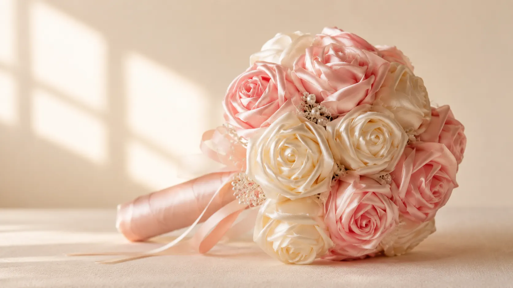

Ručná výroba
Každý kus vzniká ručne, preto má jemne osobný charakter a nepôsobí ako sériový produkt.
Ručná výroba · Zlaté Moravce
Saténové ruže, kytice a darčekové balenia vytvorené ručne pre výnimočné príležitosti.

Prečo saténové ruže
Každý kus vzniká ručne, preto má jemne osobný charakter a nepôsobí ako sériový produkt.
Farby sa dajú doladiť podľa príležitosti, štýlu obdarovanej osoby alebo balenia.
Kytice, boxy aj taštičky sa dajú pripraviť ako hotový darček bez ďalšieho balenia.
Vhodné na výročia, narodeniny, Valentín, Deň matiek aj ako osobné poďakovanie.
Odporúčané produkty
Ako prebieha objednávka
Pri ručnej výrobe nie je najrozumnejšie sľubovať automatické doručenie. Lepšie je objednávku potvrdiť podľa farieb a termínu.
Vyberte hotový typ produktu alebo základ pre vlastnú kombináciu.
Pri produkte viete doplniť farbu a pri objednávke presnejší odkaz.
Košík a formulár ukážu kompletný demo nákupný proces.
Finálne potvrdenie závisí od dostupnosti farieb a termínu výroby.
Skúsenosti zákazníkov
„Kytica bola krásne zabalená a vyzerala ešte lepšie než na fotke.“
„Objednávala som darček pre maminu a veľmi sa páčil.“
„Veľmi pekná ručná práca, farby sme doladili podľa predstavy.“
Otázky
Výroba sa rieši individuálne podľa typu produktu, farieb a aktuálneho termínu.
Áno. Farby sa dajú doladiť podľa dostupnosti materiálu a výsledného štýlu.
Áno, najmä na výročie, narodeniny, Valentín, Deň matiek alebo ako poďakovanie.
Áno, pri produktoch na mieru sa rieši veľkosť, farby, štýl aj balenie individuálne.